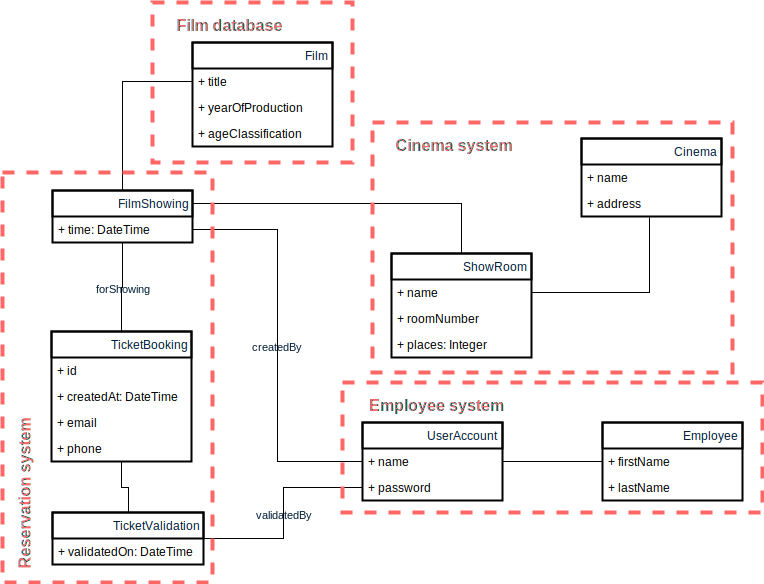

Projekt i implementacja systemów webowych
Zawartość dokumentu projektowego
- Cel projektu
- Model przypadków użycia
- Model danych
- Model architektury
- Definicja interfejsów zewnętrznych
- Projekt interfejsu użytkownika
Cel projektu
Tytuł projektu oraz opis korzyści dla potencjalnego klienta z tytułu korzystania ze stworzonej aplikacji.
Projekt
System rezerwacji biletów dla sieci kin XYZ.
Cele projektu
- Zastąpienie i integracja aktualnych systemów.
- Obniżenie kosztów funkcjonowania dzięki unifikacji systemów.
- Wprowadzenie możliwości rezerwacji przez internet oraz za pośrednictwem urządzeń mobilnych.
Model przypadków użycia
- Identyfikacja aktorów.
- Identyfikacja przypadków użycia.
- Prezentacja - diagram UML.
- Opis scenariuszy.
Aktorzy są bytami zewnętrznymi dla projektowanego systemu.
- Kto używa systemu?
- Kto instaluje system?
- Kto uruchamia system?
- Kto utrzymuje system w ruchu?
- Kto zatrzymuje system?
- Jakie inne systemy używają naszego systemu?
- Kto pobiera informacje z systemu?
- Kto wprowadza informacje do systemu?
- Czy cokolwiek dzieje się automatycznie w określonych momentach lub odstępach czasowych?
Administrator
User
Payroll system
Przypadki użycia
Administrator
- Tworzy konta użytkowników.
- Blokuje konta użytkowników.
- Usuwa konta użytkowników.
- Resetuje hasła.
Pracownik kina
- Definiuje nowy seans.
Widz
- Rezerwuje bilet.
- Anuluje rezerwację.
Czytnik kodów
- Weryfikuje bilet elektroniczny.
Harmonogram zadań
- Archiwizuje seans.
Wymagania możemy opisać w postaci przypadków użycia bądź user stories.
Przypadek użycia
- Opisuje kompletną interakcję aktora z systemem.
- Wymaga szczegółowego opisu w postaci scenariuszy
- ścieżka podstawowa
- ścieżki alternatywna
- Wymaga podziału na podzadania w celu realizacji.
User story
- Opisuje czynność jaką aktor dokonuje w systemie.
- Opisuje cel czynności.
- Z reguły opisują jedną ścieżkę (podstawową lub alternatywną).
- Mogą być dalej dzielone na mniejsze historie.
Model danych

Model architektury
Podział systemu na moduły (mikroserwisy).
Model architektury
Zależności między modułami:
Moduły mogą być częścią jednego systemu, wtedy z reguły modelujemy je jako osobne pakiety.
Często sensowne jest rozbicie dużego systemu na mniejsze systemy (architektura mikroserwisowa).
Wzorce architektoniczne
Najczęściej stosowana architektura (czy słusznie?)
Inny przykład: architektura heksagonalna

Źródło: https://8thlight.com/blog/uncle-bob/2012/08/13/the-clean-architecture.html
Definicja interfejsów zewnętrznych
- Protokół
- Czasowniki (odczytaj, zapisz, opublikuj, usuń)
- Rzeczowniki (model danych)
Przykład w dokumencie "Organizacja zajęć".
Projekt interfejsu użytkownika